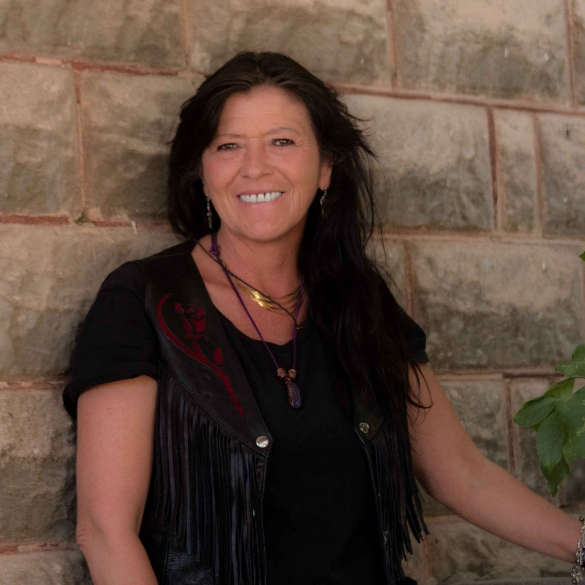

Native American Beadwork
and Handmade Art
By Hope Washakie Abeyta, an Eastern Shoshone artist sharing handmade work rooted in family, tradition, and story from the Wind River Reservation in Wyoming.

Meet Hope
Hope Washakie Abeyta is an Eastern Shoshone artist and a descendant of Chief Washakie. Raised on the Wind River Reservation in Wyoming, she creates beadwork, dreamcatchers, and handmade pieces inspired by heritage, prayer, and family tradition.
Her work reflects a lifelong connection to culture and a deep commitment to passing that legacy forward.
Featured Artwork
Each piece is one of a kind — made by hand, made with purpose.
-
 Beadwork
Beadwork
Beadwork
-
 Dreamcatchers
Dreamcatchers
Dreamcatchers
-
 Handmade Art
Handmade Art
Handmade Art
-
 Cultural Pieces
Cultural Pieces
Cultural Pieces
-
 Featured Work
Featured Work
Featured Work
-
 Detail Work
Detail Work
Detail Work
Art with Meaning
Each piece is created with care and intention. Through color, texture, and traditional symbolism, Hope's work honors balance, prayer, beauty, and connection. These pieces are meant to be cherished, displayed, and shared with meaning.
Family and Tradition
This work is part of a family legacy built through teaching, creating, and honoring tradition across generations. Every piece carries story, heart, and respect for the culture it comes from.
 Family & Tradition
Family & Tradition
Pieces & Custom Inquiries
Available pieces and custom requests may vary. Please reach out for current work, upcoming pieces, or special inquiries.
-
Beadwork Pieces
Traditional and contemporary beadwork created with care for each individual piece.
Inquire -
Dreamcatchers
Handmade dreamcatchers rooted in meaning, each one built with intention and natural materials.
Inquire -
Handmade Gifts
Thoughtful handcrafted pieces that carry story and are made to be given and kept.
Inquire -
Custom Inquiries
Have something special in mind? Reach out to discuss a custom piece made just for you.
Inquire
Inquire About Available Pieces
For available artwork, custom inquiries, or more information, please reach out directly.
Wind River Traditions
Wind River Reservation, Wyoming